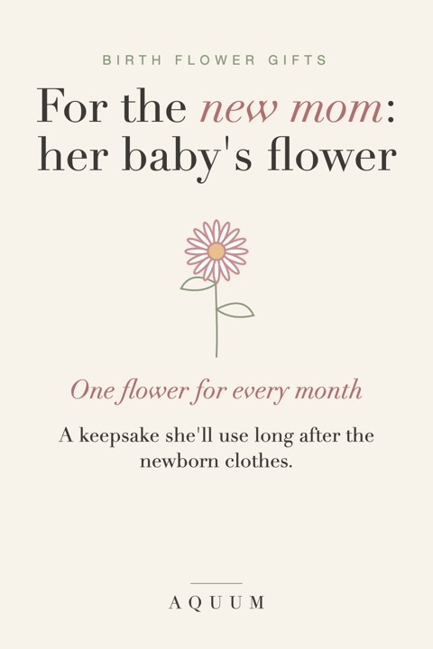

Birth Flower Gifts for New Moms: Her Baby's Flower, for Her
2026-09-30
Written by the team behind Aquum, a small birth flower gift shop. How we make money.

Most gifts for a new baby are for the baby. They're sweet, they're outgrown in three months, and the mom who just did the hardest thing of her life gets a card.
Here's a gift that's for her, but about the baby: her baby's birth flower.
Why the baby's birth flower
Every month has a flower, and every flower has a meaning. A baby born in April gets the daisy, which stands for innocence and uncomplicated joy. A baby born in June gets the rose, love in all its forms. The flower of the month her baby was born becomes a small, permanent reminder of that day.
It's something she can wear or use every day, long after the newborn clothes are in a box.
Every month's flower, for a new baby
- January · Carnation: love that doesn't give up
- February · Violet: quiet loyalty
- March · Daffodil: new beginnings
- April · Daisy: innocence and uncomplicated joy
- May · Lily of the Valley: happiness returns
- June · Rose: love in all its forms
- July · Larkspur: an open heart
- August · Gladiolus: strength of character
- September · Aster: wisdom and patience
- October · Marigold: warmth that stays
- November · Chrysanthemum: honest friendship and good fortune
- December · Paperwhite: good wishes for what's ahead
Read more about each one in the month-by-month guide.
Gift ideas
- A soft shirt with the baby's flower for the slow early weeks at home.
- A mug with the baby's flower for the 3 a.m. coffee (or tea, or water, whatever gets her through).
- A tote for the diaper-bag overflow, with the flower on the side.
- Seeds or bulbs of the baby's flower to plant together on the first birthday.
What to write in the card
"Your baby's flower is the daisy. It means innocence and uncomplicated joy, which is exactly what they brought into your life."
When to give it
Right after the birth is lovely, but it's also a good gift a few weeks later, when the visits slow down and she's still in the thick of it. It also works for a first Mother's Day, or for Christmas if the baby arrived this year. Made-to-order gifts take about a week to be made and shipped in the US.
Hosting the shower? See our birth flower baby shower ideas.